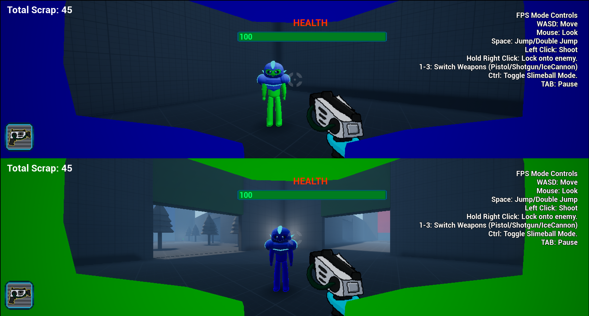
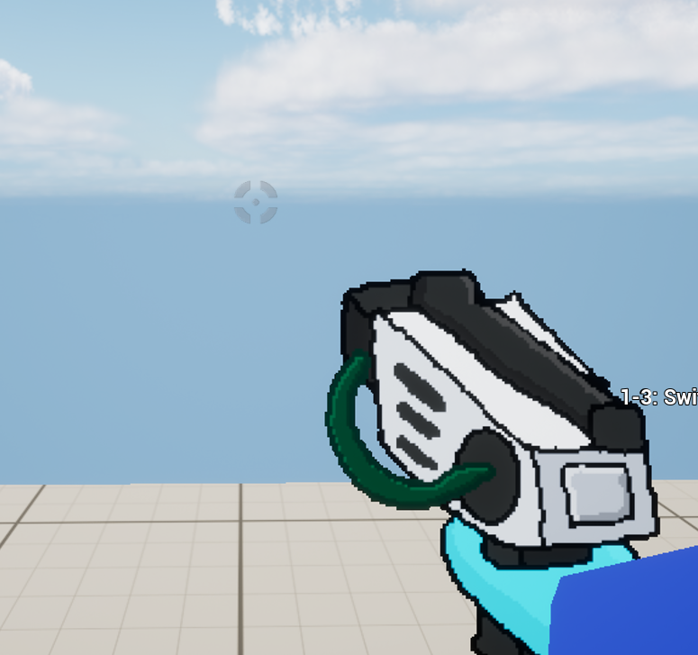
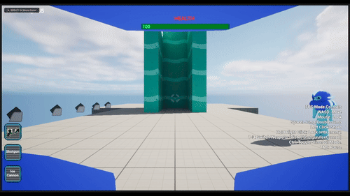

- Provide a concise description of the project, including its core concept and purpose.
- Outline the initial goals or objectives you aim to achieve.
- Identify any anticipated challenges or potential issues that may arise during development.
Slime Blast is a story-driven first person shooter with a sci-fi setting. The player controls a humanoid slime creature, and the gameplay revolves around the slime's ability to morph into and out of a smaller blob form that allows them to move around quicker, stick to walls, and squeeze through pipes and grates, which they would not be able to normally do. The gameplay also involves gunplay, as the player will encounter enemies that they must defeat by using various sci-fi weaponry found throughout the game.
- Sci-Fi first person shooter where you play as a humanoid slime creature.
- I wanted to move away from my usual genre of 3D platformers and I have recently been playing first person shooters
- I wish to include multiplayer but that's new to me.
- I wish to publish this game professionally, working with professional pipelines (detail these later) (uploading builds to platforms, working with version control, etc.)
I wanted to move away from my usual genre of 3D platforms, and I have recently been playing first person shooters, so I decided to choose that genre. I also want to include multiplayer as I felt nostalgic towards older games that had PVP multiplayer modes, pitting friends against each other in deathmatch or capture the flag modes.
I want to publish this game professionally, working with professional pipelines (detail these later) such as uploading builds to platforms using Github, working with version control, etc.
- Identify relevant sources for the project, including articles, documentation, talks, and games.
- Detail how these sources have informed your practical work and influenced your approach.
- Conduct research on games that are relevant to your project. Provide a brief description of each game and the insights it offers.
- Analyse the game's approach, cross-referencing it with other sources such as articles or talks to support your analysis.
- Explain how these insights apply to your project and influence your decision-making process.
Metroid Prime is a Sci-Fi first person shooter developed by Retro Studios Metroid Prime (2002). Metroid Prime is considered one of the best video game experiences of all time and the top GameCube game according to IGN(The 25 Best GameCube Games of All Time - IGN, s.d.).
The level design in Metroid Prime features large environments comprised of multiple interconnected rooms. (The World Design of Metroid Prime | Boss Keys - YouTube, s.d.)
The level design is largely non-linear, there are a lot of paths the player can follow, some take them to other areas of the map, and some areas feature small challenges that the player can complete to get extra items.
Figure 1: Showcase of the Environment in Metroid Prime. The player has multiple directions they can take throughout the level. They can climb up the stairs off to their right and cross over the bridge, head underneath the bridge, or head down the tunnel to the right to find a save room.
Alongside studying the environment of Metroid Prime, I also liked the fact that they contextualise the First Person Mechanic as an In-Helmet Viewpoint, and all of the information on-screen is being projected onto the helmet's visor. Sometimes you can even see the character's face reflected in the glass if you stare at a bright explosion. I took heavy inspiration from this when designing my character and taking into account the first person viewpoint.
The gameplay of Metroid Prime consists of combat, puzzle solving and exploration. The combat is divided into both shooting enemies as well as moving to avoid their attacks. This makes the combat in Metroid Prime feel more fluid and active than other more modern first person shooters that typically feature stationary cover-shooter combat centered around hiding behind walls, and then shooting enemies when you get the opportunity, which tends to make encounters blend together.

Figure 2: Example of Combat in Metroid Prime. The player is facing an armoured beetle that cannot be damaged from the front. They must strafe around it to avoid its charge attacks, and then attack its vulnerable back to defeat it.
Since combat is going to be a large part of my game, I wanted to make sure the combat feels fluid and fast-paced to keep the game engaging, which is why I chose to look at Metroid Prime's combat, as while the game mainly consists of exploration, combat is always dotted throughout to give the player a dose of action (IGN, 2002).
Bioshock is a story driven first person shooter developed by 2K Boston, released in 2007. Since I was attempting to make a story-driven game, I chose to look at Bioshock as it is largely considered one of the best story-driven games of all time, with its unique underwater setting, engaging story and immersive environmental storytelling (IGN, 2007).
The gameplay of Bioshock is a mix of exploring the environment, solving small puzzles and learning about the game's world, and fast-paced first person gunplay. Featuring combining several different guns, and also magic powers such as blasts of electricity or grabbing objects with telekinesis. The player is encouraged to experiment with numerous combinations of weapons and powers as many have different effects in combat, leaving it up to the player's inventiveness on how they wish to approach fights. (IGN, 2007).

Figure 3. Screenshot of Bioshock. The player experiments with a newfound weapon combination by stunning an enemy with electricity before shooting them, making them take more damage, rewarding them for their experimentation.
I studied the combat in Bioshock because I want to incentivise and reward players for getting creative at defeating enemies. Trying out different weapon combinations and approaching combat encounters differently can lead to an interesting form of replay value as well as keeping players entertained.
The level design is a mix of large areas to explore, open arenas where the player has to fight numerous enemies, and optional side areas that contain challenges the player must overcome which reward them with items such as extra ammo, or money to spend.

Figure 4. Screenshot of Bioshock. The player can uncover the narrative of a large-scale conflict that left the city in ruin and decay, which is reflected in the environment as the player explores.
Studying the level design of Bioshock was great for learning how they manage to create several locations that all tell the story of an underwater utopia that fell to anarchy and ruin.
The progression of Bioshock involves travelling to different areas with a set objective the player must reach, though how they reach that goal is up to them. There are usually multiple ways the player can reach the destination, such as different routes to take, or different approaches that affect what enemies they may encounter.
The player is given new weapons throughout the game to add more variety to their loadout. The player can also upgrade their weapons at any time throughout the game by visiting upgrade stations found throughout the environment, spending their money to make their current weapons more powerful.
- Research academic papers, books, or articles that provide theoretical guidance for your project. Include a brief summary of each source.
- Describe how the academic research applies to your project and shapes your design and development decisions.
For an academic source, I chose to look at Flow and Immersion in First-Person shooters (Nacke and Lindley, 2008). The article reports the results of a psychological study about how different aspects of Half-Life 2 affected player's gameplay experience. The study reported that players were more engaged when playtesting levels that were designed for combat-orented flow, when compared to levels that featured empty levels, weak enemies with little visual variety, repeating textures and models, limited choice of weapons, and an overload of health and ammo supplies, leading to very little challenge and no sense of enjoyment.
I chose to analyse this source as the level design would be a large factor in my game, and I want the player to feel engaged while playing my game, as boredom can greatly reduce their enjoyment. There should be a focus on making the level design interesting to explore and by also balancing the game's challenge, such as enemy vareity and difficulty, the frequency of health pickups, checkpoints and weapon unlocks.
- Investigate relevant documentation, tutorials, or instructional videos that provide technical insights into your tasks. Summarise the content and its relevance to your project.
- Explain how this technical knowledge supports your project work and guides your decision-making process.
Since I wanted to create a local multiplayer mode in my game, I looked at Epic Games' (2025) Unreal Engine documentation on how to create local and networked multiplayer (Unreal Engine 5.5 Documentation s.d.).
I also looked at a few YouTube videos dedicated to creating basic multiplayer modes in Unreal Engine. The first video I looked at was about creating a basic split-screen multiplayer mode in Unreal Engine by MikeTheTech (2023). The video was a short demonstration on configuring the editor settings and adding a second player to the game.
- Provide a step-by-step breakdown of your development process, including key milestones and decisions made throughout the project.
- Highlight any tools, frameworks, or techniques used, and explain how they contributed to the implementation.
- Include screenshots, diagrams, or code snippets where relevant to showcase your progress.
My Prototype consisted of a basic first-person shooter, including movement, the weapons, and the ability to morph into a ball.
The project was 14 weeks long, so I used an Agile development methodology. Using the website Trello, I divided the time into 7 sprints each lasting two weeks and then I divided my tasks among each sprint so I could spend multiple weeks working on a few mechanics. This aligned with regular feedback sessions we would have in lessons where we would reflect on what we completed, and what we planned to do over the next few weeks.
Looking at the Documentation showed me the basics on creating a simple local multiplayer mode to my game. I learned what to adjust in the settings to change the splitscreen view to a vertical splitscreen instead of a horizontal one, and then how to add extra local players which I then set to be possessed. However I was facing difficulty with getting the second player to actually be controllable, so I had to look at some YouTube video tutorials as well to see how I could get it working.
The first youtube video I looked at was a short demonstration on configuring the editor settings and adding a second player to the game. This helped to organise my existing code a little as it essentially recapped what I read about in the documentation, but it did not solve my issue of the second player not receiving input.
I watched a separate video which was about creating multiple players and assigning inputs to them in a fighting game by UNREAL ENGINE JOURNEY (2023). This video walked through creating multiple players at the start of the level, and assigning input mapping contexts to both of them, it also mentioned the important detail I was missing, that the input mapping context needs to be assigned to a different ID for each player (player one has an ID of 0, and player two has an ID of 1), which I had not implemented so it was attempting to possess both characters with the same player ID. I edited code and changed the script that adds multiple players to also assign a different ID to both of them. Doing this allowed the second player to work with a second controller.
This is the code that the multiplayer level executes to spawn multiple players. I controlled the amount of extra players it spawns via a separate integer variable, but it essentially just spawns in the initial character, and then spawns in the other player characters after that using an Add local player node, making sure they're all possesed correctly.

Figure 5. The viewport in the multiplayer level. Two characters have spawned in, and are positioned so they are both looking at each other, demonstrating the success of the local co-op splitscreen view.
I turned the weapons into 2D sprites to make them easier to develop. During the prototype phase of the project I used 3D models for the weapons, however this made it harder to create multiple weapons due to having to model, texture, rig, and animate every weapon. Which was a lot of wasted time that I could have spent on other parts of the game.
The weapons became a simple 2D flipbook of the weapon's firing animation. By default it idles on the first frame of the animation, and then plays when you shoot the weapon.

When working on my project in one of my lessons, my teacher Assad suggested that I should make it so that when the player moves from side to side, the camera tilts in that direction to make the camera feel more lively. I thought it was a great idea and started to work on it almost immediately.
The code gets the player's velocity multiplied to their right vector, and adds the two values together. This returns the player's sideways velocity, which is then used to get the value of a curve float with different points at the maximum and minimum speed that the player can walk. Therefore, if the player walks left and their velocity is -525, the curve returns a value of -3, which is then set as the player camera's X rotation.

Figure x. Gif demonstration of the strafing camera tilt in action, the camera bends in the direction that the player is moving.
My next hurdle to overcome was changing the weapon system from a bunch of switch statements (the horror) to a Data table containing everything related to the weapons such as their sprite flipbook, shoot sound, bullet to shoot, and shot particle.
I created a lock-on mechanic since both the player and enemies would be moving constantly, having a mechanic to lock the player's view to an enemy would greatly help the player with being able to land hits much easier.
Metroid Prime, being one of the main inspirations for my game, features the lock-on system to make up for the limitations of the console it was on. The player used the left stick for both moving and turning, and used the lock-on mechanic to focus on enemies to attack them.

Figure x. The lock-on mechanic demonstrated in Metroid Prime. The player is fighting multiple flying enemies that dart around the screen shooting at the player. The lock-on system allows the player to constantly look at a targeted enemy, to make it much easier to hit them.
My initial lock-on mechanic used a Get all Actors with Tag node that I used to find actors with the lock-on tag, then using a For Each Loop to find the closest actor that was also on-screen. However I quickly found that since it was collecting references for every actor that had the tag regardless of where they were in the level, the mechanic was quite performance heavy and would sometimes cause the game to stutter for a second when there was a large amount of enemies present in the level.
Figure x. Event tick loop, keeps focusing on the locked actor so long as the actor is still relevant and the player hasn't released the keybind.
When I redesigned the lock-on system, I decided to use a box raycast to find any enemies that the player is looking at. Though I faced an apparent issue that the raycast would keep getting blocked by the environment, so I created a new collision type called "Lock-On Target" that could only be detected by the raycast.

Figure x. Demonstration of Lock-On mechanic in-game. Note the visual effects that appear on-screen to indicate that the check for a valid lock-on target was successful.
- Detail any innovative or new approaches you explored during the project.
- Explain why these approaches were chosen and how they differ from standard practices.
- Evaluate the success of these approaches, including any challenges faced and lessons learned.
During this project, I explored some new approaches while developing my project I started doing a lot more user testing than I usually would. As most class projects would consist of me making the game, and submitting it without conducting much user testing, as they were simply showcases of mechanics I have made. As such, I was expected to have other players test my game to make sure all of my mechanics were working correctly. As well as this, we were going to be publishing our project, and I wanted to make sure other players could easily understand how the game works.
The user testing in my project was very insightful, as I learned how other players approach a new game. Since I have been working on this project from the start, it’s very helpful to see how someone who has never seen the game before will react to mechanics in my game.
Our teacher also showed us more industry standard techniques, I also learned to make my code easier to understand by keeping it organised and annotated throughout throughout so that anyone looking at my code could understand it much easier.
I found it helpful as it helps me remind myself about mechanics I created earlier into the project when I return to the later, as I may have forgotten. This was a fairly common issue with projects I made earlier on in my course.
- Present feedback or issues identified during testing, using graphs, tables, or visual aids to summarise results.
- Describe how these issues were addressed. If any issues were not resolved, provide a clear justification for leaving them unaddressed.
Before getting other playtesters to test my game, I would conduct a lot of self testing. Making sure that all of the mechanics work properly and don't have any unexpected bugs.
A lot of the testing in my project was guided user testing where I walked the players through the game, explaining important mechanics and what they need to do to progress. I also conducted some blind user testing, allowing the players to play my game without guidance from me, leaving it up to the player to figure out important mechanics and what they need to do, which was important as I wanted to make sure players could naturally figure out how to progress in the game.
After players had tested my game, I set up a Google form that players could access by scanning a QR code on both the title screen and the victory screen after the game is complete. The form allowed the play testers to give feedback as well as rank how they feel about some of the mechanics in my game. Overall, I received a lot of good feedback, though there were some issues that players identified that I needed to address.
I compiled my results of the test into a spreadsheet.
Figure x. The results of testers filling in my feedback form.Summary of Results
- Summarise results with detail in an appendix;
- The feedback for testing was: (100% think the player's default move speed is just right)
- I focused on the more important issues
Reflecting on the Data collection, a lot of the questions in the survey were Game Design related. Which ended up meaning a lot of the data in my survey wasn't all too helpful when it came to bug-fixing and improving mechanics. However after receiving the results, I decided to focus on the more major issues that players faced first, and then move towards the minor issues after that.
The playtesters felt the guns were unbalanced, some guns shot faster and dealt more damage making them superior over other guns, and some just weren't worth using. Alongside this, the testers thought that the character feels better to control in larger areas, as when they are required to perform tight platforming, the momentum can cause the character to fall off the platforms or overshoot. These issues were quite easy to fix as most of them could be easily changed by adjusting some variables in the code or character movement script.
Some of the mechanics in the game weren’t explained very well due to having to read in-level text prompts that sometimes could be missed if the player was too quickly through the level, which meant that blind testers sometimes didn’t know certain mechanics were in the game. I made a solution to this by having on-screen pop-ups appear explaining mechanics when they became necessary, such as when the player needed to double jump across a gap or how to approach combat mechanics such as Lock-on.
The lack of sound in the game was also a common complaint, but that wasn't an issue I needed to fix since I already had sound in my game, the testers just couldn't hear it as the University PCs we were testing on didn't have sound output.
One tester noted that the boss encounter door doesn’t lock after entering, allowing them to exit the arena and avoid fighting it. To have the boss door lock after the player entered, I added a box trigger in the world that locks the door after the player goes through it in the level blueprint.
There were some issues I decided would be better to not fix as they weren't a big priority, one common issue being the level design and how the player could skip most of the combat encounters. Whilst it was a good issue to raise, I thought it was best to prioritise my time with more major issues with the mechanics, as this was an issue with the level design which was a prototype blockout.
- Identify any technical difficulties encountered during the implementation phase.
- Provide details on how these issues were diagnosed and resolved.
- If any difficulties remain unresolved, explain the impact on the project and any mitigation strategies used to minimise their effect.
- Reflect on what you would do differently in future projects to avoid similar issues.
During testing I would often face the issue of not being able to go back to the title screen after starting the game since I had not created a pause menu. I resolved that issue by creating a temporary debug level select so that I could go back to the title-screen or other levels whenever I wanted to.
Another issue I faced was that during testing, the player could fall off the level, and since there was no kill barrier in place to reset them, the player would keep falling forever. To solve this, I created a button command that respawned the player if they fell off of the level.
Since I was publishing my game, I had to make sure all of the audio was fair-use and not copyrighted. Throughout the development of my game I had implemented a lot of copyrighted audio for testing purposes, but I had to solve the issue by finding websites dedicated to copyright free or Creative Commons audio and sound effects, such as opengameart.org, which I then used to replace all of the copyrighted audio in my game.
On one occasion I forgot to have a build ready in time for my lesson that week, which meant that I could not test for errors that only show up in the builds. It was also difficult to create a build in the actual lesson since building for the first time on a new computer could take a couple of hours due to all of the assets it needs to compile. So while I didn't get around to making the build, I learned from the experience by remembering to create builds more often.
On another occasion I forgot to commit my code changes to Github, meaning when I logged on to the Uni computers to work on my game, I found that it was running a previous version of the game, lacking many of the changes I had made. I solved this issue by using remote desktop to commit my changes from the classroom, and I decided to commit my code changes more regularly to avoid repeating this issue in the future.
- Provide a link to your complete source code or project files.
- Ensure the link is publicly accessible or shared with the appropriate permissions.
- Include a brief description of the files provided, highlighting key components or any instructions required to run the project.
Link to GitHub Repository for the source code
- Share a link to a playable or executable build of your project.
- Ensure the build is accessible across relevant platforms and is publicly accessible.
- Include any necessary instructions for running the build, such as system requirements or installation steps.
Link to a playable build of the project on Itch.io
- Embed a video or provide a link to a recorded demonstration of your project in action.
- The video should showcase key features, functionality, and any unique elements of your project.
- Include a brief commentary or text overlay in the video to explain the different aspects of your project as they are shown.
Link to a Video Walkthrough of my game on YouTube
- Compile a complete list of all sources referenced throughout your project. This may include articles, journals, videos, games, software, documentation, or any other materials.
- Ensure all references are formatted according to the [university's citation method](https://mylibrary.uca.ac.uk/referencing).
- Organise your references in alphabetical order. Alternatively, you may separate them by type (e.g., academic sources, games, videos), but consistency is key.
‘Metroid Prime’ (2002). Retro Studios.
'Bioshock' (2007). 2K Boston.
The 25 Best GameCube Games of All Time - IGN (s.d.) At: https://www.ign.com/articles/the-best-gamecube-games-of-all-time (Accessed 10/02/2025).
The World Design of Metroid Prime | Boss Keys - YouTube (s.d.) At: https://www.youtube.com/watch?v=zyoGD6uwCmk (Accessed 10/02/2025).
Pinchbeck, D. (2008) 'Story and recall in first person shooters' In: International Journal of Computer Games Technology pp.1–7.
Flow and immersion in first-person shooters | Proceedings of the 2008 Conference on Future Play: Research, Play, Share (s.d.) At: https://dl.acm.org/doi/10.1145/1496984.1496998 (Accessed 10/03/2025).
How to set up local/split-screen Multiplayer in Unreal Engine 5! (2023) At: https://www.youtube.com/watch?v=6aAQ5ttikgs(Accessed 12/02/2025).
UE5 Fighting Game Tutorial: Local Multiplayer Game With 2 Gamepads | TrueFGE & Unreal Engine 5 (2023) At: https://www.youtube.com/watch?v=oonRBOBJcIo (Accessed 12/02/2025).
Fig x Bioshock Combat (2021) [YouTube video, screenshot] At: https://www.youtube.com/watch?v=FTXJfa12VDM (Accessed 14/05/2025)
Fig x Bioshock Environment (2021) [YouTube video, screenshot] At: https://www.youtube.com/watch?v=FTXJfa12VDM (Accessed 14/05/2025)
SubspaceAudio (2016) 512 Sound Effects (8-bit style). [Sound] At: https://opengameart.org/content/512-sound-effects-8-bit-style (Accessed 14/05/2025).
I used a Public Domain sound pack to replace all of the template audio in my game.
Jermbo_origin (s.d.) [Image] At: https://static.wikia.nocookie.net/regretevator/images/b/b9/Jermbo_origin.jpeg/revision/latest?cb=20240413165944 (Accessed 9/04/2025)
I used the original image as a reference to draw my own version that I used in-game.